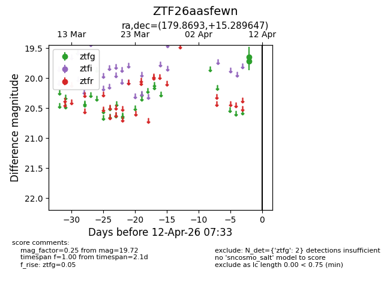
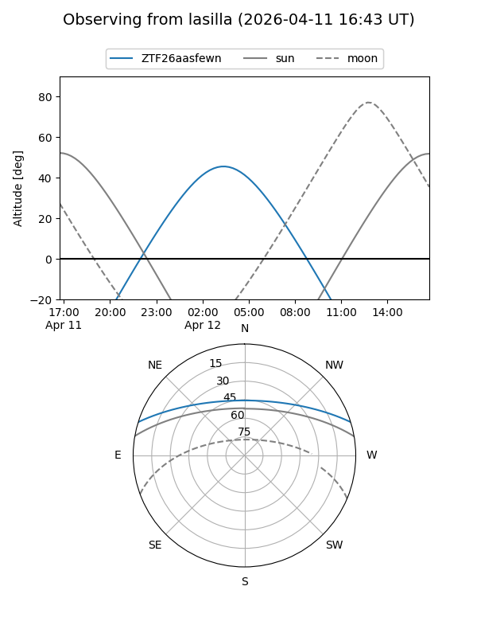
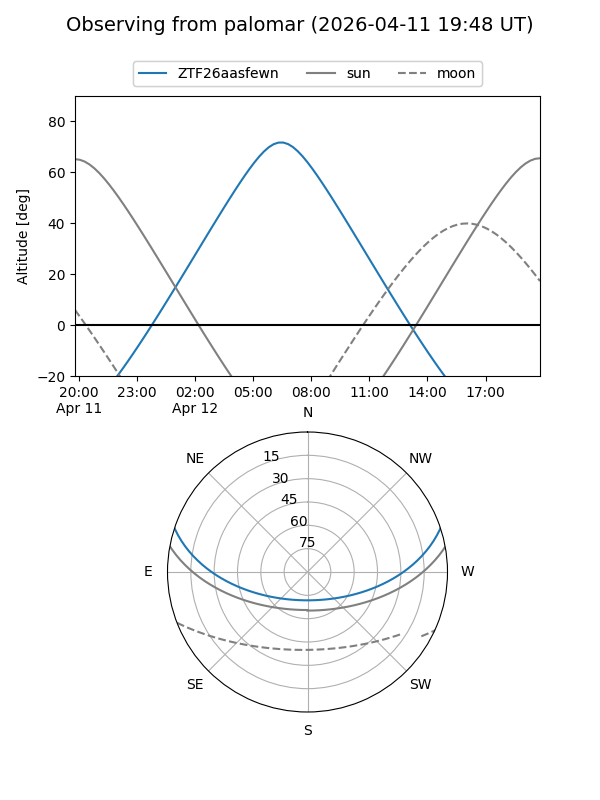

ZTF26aasfewn
Target ZTF26aasfewn at 2026-04-12 07:41
Aliases and brokers:
FINK: link
Lasair: link
ALeRCE: link
alt names
ZTF26aasfewn (ztf,fink_ztf)
Coordinates:
equatorial (ra, dec) = 179.8693,+15.28965
equatorial (HMS+DMS) = 11:59:28.63,+15:17:22.73
galactic (l, b) = (254.7367,+73.08933)
Flags:
Photometry:
last ztfg=19.72
2 ztfg detections
Lightcurve

Visibility


Additional plots